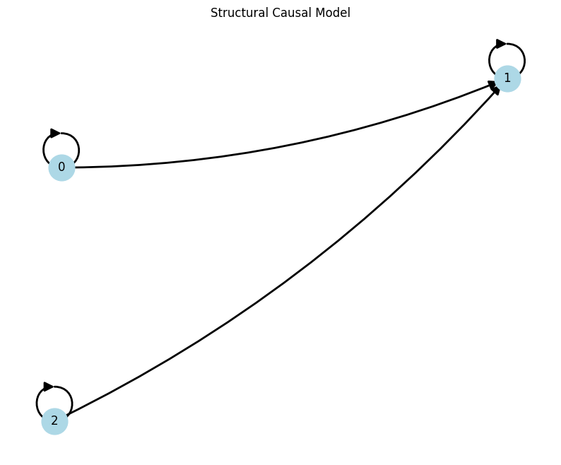
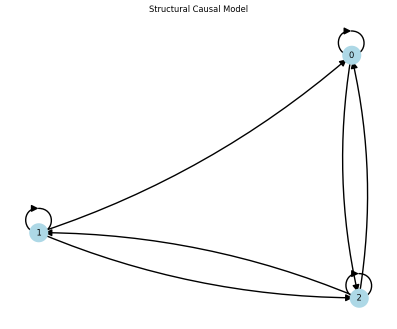
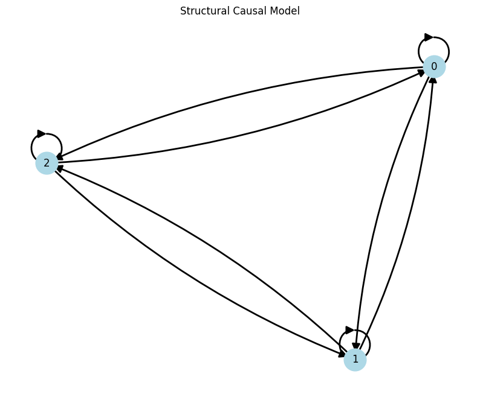
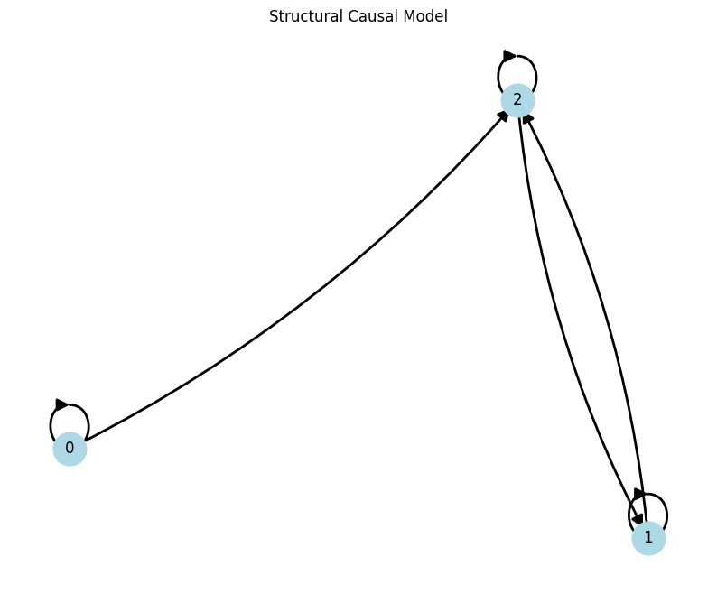
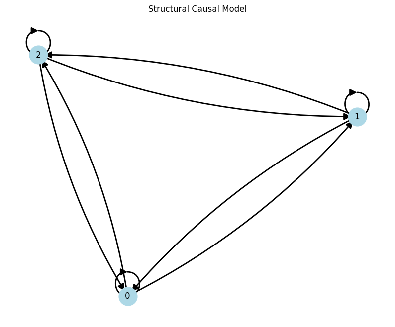

Evaluation#
This notebook serves to showcase how the evaluation pipeline is performed. Full script can be found at eval.py
%load_ext autoreload
%autoreload 2
import sys
sys.path.append('..')
import warnings
warnings.filterwarnings('ignore')
import copy
import numpy as np
import pandas as pd
import xarray as xr
import matplotlib as mpl
from src.causaldynamics.scm import create_scm_graph
from src.causaldynamics.plot import animate_3d_trajectories, plot_trajectories, plot_scm
from src.causaldynamics.score import score
from src.causaldynamics.baselines import PCMCIPlus, FPCMCI, VARLiNGAM, DYNOTEARS, NGC_LSTM, TSCI, CUTSPlus
from tqdm import tqdm
from pathlib import Path
Complete script to generate the dataset can be found under scripts/generate_<system>.py.
Otherwise, follow our instructions to download and process the pre-generated dataset from https://huggingface.co/datasets/kausable/CausalDynamics
# Once you have the dataset, either generated or downloaded
# Notice that the dataset has `time_series` and `adjacency_matrix` variables.
DATA_DIR = Path("../data/simplex/noise=0.00_confounder=False/data") # (you can change this to your own path)
ds = xr.open_dataset(DATA_DIR / "Lorenz84_N10_T1000.nc")
# Extract timeseries and adjacency matrix as target
timeseries = ds['time_series'].to_numpy().transpose(1, 0, 2) # shape of (N, T, D)
adj_matrix = ds['adjacency_matrix'].to_numpy()
# NOTE: If dataset is from coupled system e.g., "../data/coupled/...", follow these changes to load the data:
## timeseries = ds['time_series'].to_numpy()[..., 0].transpose(1, 0, 2) ## select the first dimension of each multidimensional node
## adj_matrix = ds['adjacency_matrix_summary'].to_numpy() ## `adjacency_matrix_summary` is the true adjacency matrix for coupled system
Evaluation#
Evaluate CUTS+
# CUTS+
tau_max = 1
corr_thres = 0.8
## Estimate adjacency matrix
cuts_adj_matrix = []
for x in tqdm(timeseries):
cuts_model = CUTSPlus(tau_max=tau_max, corr_thres=corr_thres)
cuts_model.run(X=x)
cuts_adj_matrix.append(copy.deepcopy(cuts_model.adj_matrix))
## Compute scores
score(
preds= np.array(cuts_adj_matrix),
labs= adj_matrix,
name='CUTS+'
)
100%|███████████████████████████████████████████████████████████████████████████████████████████████████████████████████████████████████| 10/10 [00:07<00:00, 1.39it/s]
Scoring...
| CUTS+ | |
|---|---|
| Metric | |
| Joint AUROC | 0.500000 |
| Individual AUROC | 0.500000 |
| Null AUROC | 0.500000 |
| Joint AUPRC | 0.666667 |
| Individual AUPRC | 0.666667 |
| Null AUPRC | 0.666667 |
G = create_scm_graph(cuts_model.adj_matrix)
plot_scm(G);

Evaluate PCMCI+
# PCMCI+
tau_max = 1
pc_alpha = 0.01
## Estimate adjacency matrix
pcmci_plus_adj_matrix = []
for x in tqdm(timeseries):
pcmciplus_model = PCMCIPlus(tau_max=tau_max, pc_alpha=pc_alpha)
pcmciplus_model.run(X=x)
pcmci_plus_adj_matrix.append(copy.deepcopy(pcmciplus_model.adj_matrix))
## Compute scores
score(
preds= np.array(pcmci_plus_adj_matrix),
labs= adj_matrix,
name='PCMCI+'
)
100%|███████████████████████████████████████████████████████████████████████████████████████████████████████████████████████████████████| 10/10 [00:00<00:00, 30.79it/s]
Scoring...
| PCMCI+ | |
|---|---|
| Metric | |
| Joint AUROC | 0.416667 |
| Individual AUROC | 0.416667 |
| Null AUROC | 0.500000 |
| Joint AUPRC | 0.631944 |
| Individual AUPRC | 0.633135 |
| Null AUPRC | 0.666667 |
G = create_scm_graph(pcmciplus_model.adj_matrix)
plot_scm(G);

Evaluate VARLiNGAM
# VARLiNGAM
tau_max = 1
## Estimate adjacency matrix
varlingam_adj_matrix = []
for x in tqdm(timeseries):
varlingam_model = VARLiNGAM(tau_max=tau_max)
varlingam_model.run(X=x)
varlingam_adj_matrix.append(copy.deepcopy(varlingam_model.adj_matrix))
## Compute scores
score(
preds= np.array(varlingam_adj_matrix),
labs= adj_matrix,
name='VARLiNGAM'
)
100%|███████████████████████████████████████████████████████████████████████████████████████████████████████████████████████████████████| 10/10 [00:00<00:00, 24.06it/s]
Scoring...
| VARLiNGAM | |
|---|---|
| Metric | |
| Joint AUROC | 0.575000 |
| Individual AUROC | 0.575000 |
| Null AUROC | 0.500000 |
| Joint AUPRC | 0.701786 |
| Individual AUPRC | 0.704861 |
| Null AUPRC | 0.666667 |
G = create_scm_graph(varlingam_model.adj_matrix)
plot_scm(G);

Evaluate DYNOTEARS
# DYNOTEARS
tau_max = 1
## Estimate adjacency matrix
dynotears_adj_matrix = []
for x in tqdm(timeseries):
dynotears_model = DYNOTEARS(tau_max=tau_max)
dynotears_model.run(X=x)
dynotears_adj_matrix.append(copy.deepcopy(dynotears_model.adj_matrix))
## Compute scores
score(
preds= np.array(dynotears_adj_matrix),
labs= adj_matrix,
name='DYNOTEARS'
)
100%|███████████████████████████████████████████████████████████████████████████████████████████████████████████████████████████████████| 10/10 [00:00<00:00, 68.94it/s]
Scoring...
| DYNOTEARS | |
|---|---|
| Metric | |
| Joint AUROC | 0.508333 |
| Individual AUROC | 0.508333 |
| Null AUROC | 0.500000 |
| Joint AUPRC | 0.670401 |
| Individual AUPRC | 0.670635 |
| Null AUPRC | 0.666667 |
G = create_scm_graph(dynotears_model.adj_matrix)
plot_scm(G);

Evaluate NeuralGC (cLSTM)
# cLSTM
tau_max = 1
## Estimate adjacency matrix
clstm_adj_matrix = []
for x in tqdm(timeseries):
clstm_model = NGC_LSTM(tau_max=tau_max)
clstm_model.run(X=x)
clstm_adj_matrix.append(copy.deepcopy(clstm_model.adj_matrix))
## Compute scores
score(
preds= np.array(clstm_adj_matrix),
labs= adj_matrix,
name='cLSTM'
)
100%|███████████████████████████████████████████████████████████████████████████████████████████████████████████████████████████████████| 10/10 [00:06<00:00, 1.55it/s]
Scoring...
| cLSTM | |
|---|---|
| Metric | |
| Joint AUROC | 0.475000 |
| Individual AUROC | 0.475000 |
| Null AUROC | 0.500000 |
| Joint AUPRC | 0.655747 |
| Individual AUPRC | 0.656845 |
| Null AUPRC | 0.666667 |
G = create_scm_graph(clstm_model.adj_matrix)
plot_scm(G);
